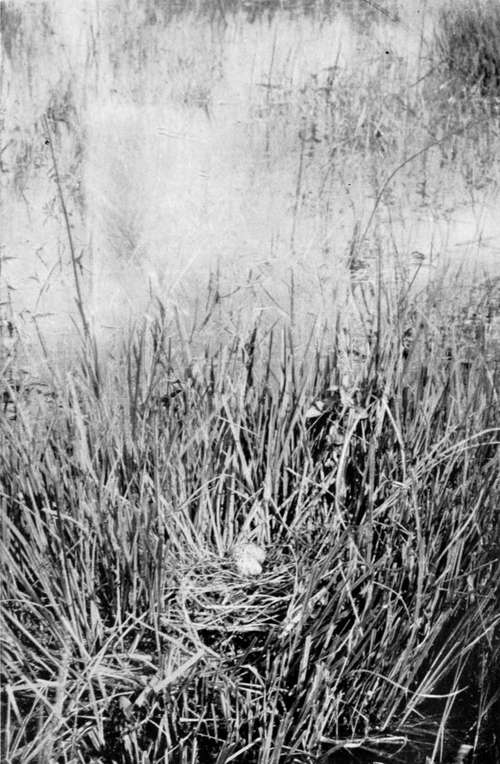
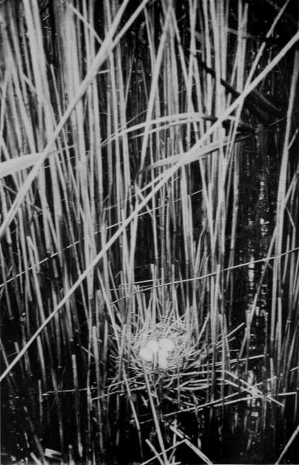

Birds'-Nesting In Hungary. Part 2
Description
This section is from the book "Bird-Hunting Through Wild Europe", by R. B. Lodge. Also available from Amazon: Bird-Hunting Through Wild Europe.
Birds'-Nesting In Hungary. Part 2
Here I also heard for the first time in my experience the curious, reeling note of Savi's Warbler (Loctistella luscinioides), which vanished from our Eastern counties more than fifty years ago, owing to the drainage and reclamation of the fens. It was in all probability never an abundant species with us, or it would not have disappeared so utterly and completely as it has done, for after all there are still remaining plenty of suitable and extensive reed-beds in Norfolk and elsewhere. It nests here more or less abundantly, but at this late date it was quite useless to expect to find eggs.
Larus ridibundus, the Black-headed Gull, was common, but I only picked out one clutch of well-marked eggs for the sake of having some from this locality.
Of the Pochard (Anas ferina) we found several nests. One of them held nine eggs, but another had evidently been recently discovered and looted by that incorrigible egg-sucker, the Marsh Harrier (Circus aeruginosas). This fine-looking bird may be seen constantly all over Europe. At any rate wherever I have been I have always met with it frequently, gliding along with easy and buoyant flight over marsh and reed-bed and open country, never in forest districts, where it is quite out of place. It is very bold, and will approach shooters in the most impudent manner. Even if fired at and missed it will come again within shot directly afterwards ; and it is curious how easy it is to miss a Marsh Harrier. Its vulnerable surface is, I suppose, small in comparison with its imposing spread of wing, which makes it look very much larger than it really is. During the nesting season they devour immense quantities of eggs and young birds. I have seen them, when picked up after being shot, so full of yolk and white of eggs that it has dribbled out of their beaks. But after the breeding season I am convinced that they do a certain amount of good by catching rats, mice, and other destructive rodents, and also probably a certain proportion of beetles, locusts and large insects.
Nest Of White-Winged Black Tern (Hydrochelidon Leucoptera)
The harsh note of the Great Reed Warbler was as usual in such places a very conspicuous feature, and slung between the upright stalks of the reeds were several nests. It is always a very late breeder. I had left it on the Montenegrin and Albanian frontier in May, not having yet commenced nesting operations. Here some of the eggs were incubated, but others we found quite fresh. They seem to wait until the reeds are grown to their full height before they begin to build their beautiful and interesting nests. (I have noticed the same thing with the Small Reed Warbler, having found eggs as late as August, both in Norfolk and in Essex.) Several nests of the Black Tern (Hydrochelidon nigra) were also found.
The next day we drove to the farther end of the lake, in a typical country wagon without springs, sitting on sacks filled with hay or straw, along a typical Hungarian road, sandy and very rough, and bordered the whole way with acacia-trees. Haymaking was in full swing, and working in the fields, vigorously swinging the scythe through the tall grass, were many women, clad in blue jackets and white skirts. But they are very big women, surely, in Hungary, and given to tobacco. There is one with a well-coloured clay pipe in full blast. And a beard ! Why, they are men after all! Men in petticoats ! They are really divided skirts, or very long and very, very wide linen drawers ; but the effect is exactly that of a petticoat or skirt, and looks very incongruous, especially for men working in the fields. One can understand women desiring to emancipate themselves from the inconvenience of skirts and petticoats, but that men should go out of their way thus to hamper themselves is past all comprehension. The head-gear with this astonishing costume is a very hard-looking, broad-brimmed black felt hat.
Our boatmen on this second day were attired in this petticoat costume, and perhaps it is not so out of place in a boat. On occasions it is even convenient, for wading it is very easy to pull up one's skirts, or trousers, shall we say ? and wade deep without getting any garment wet. These men were equally as intelligent as those of the previous day, and knew exactly where to take me for any bird I desired.
Nest Of Little Bittern (Ardetta Minuta)
The very first nest seen was one of the rare and local Lusciniola meilanopogon, built at the outside of a 'clump' of tall reeds. This nest was extremely long and compressed between the close reed-stalks about a foot from the water. The bird resembles a very well-marked Sedge Warbler, but the markings about the head are nearly as conspicuous and well defined as those of a Whinchat. An attempt to photograph this bird was a failure, from the impossibility of hiding either myself or the camera; but during the time I was waiting I had plenty of opportunity to see it at close quarters, as it crept about the clump of reeds in the near neighbourhood of the nest, and to hear its peculiar note.
There were plenty of Bearded Tits (Panurus biarmicus), and my experiences with these birds in the Norfolk Broads, their last stronghold in England, enabled me to find several nests where one would naturally expect to find them, among the rough tangle of dead stuff at the bottom of the floating reed islands just above the water. But there were also several nests built underneath a rough sort of penthouse formed by tying a handful of growing reeds in a knot and bending down the upper part. Whether these had been made by the boatmen purposely for the Bearded Tits, or for some other purpose, and taken advantage of by the birds, I do not know and could not ascertain, for I was unable to talk to my boatmen at all, except just the Latin names of the birds. Even with Herr Cerva, who was in another boat, I could only speak with difficulty, his knowledge of English being limited, and eked out with the constant use of a small dictionary. But one thing was certain, the men always looked under each of these rough shelters for nests, and very often with success.
Continue to: